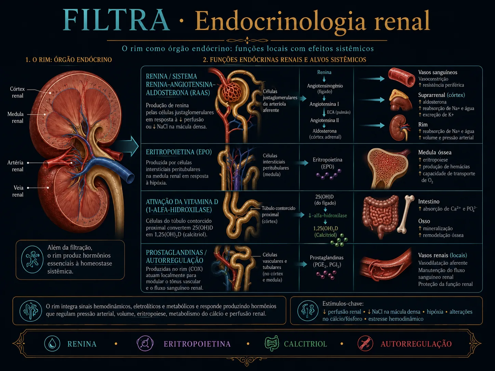
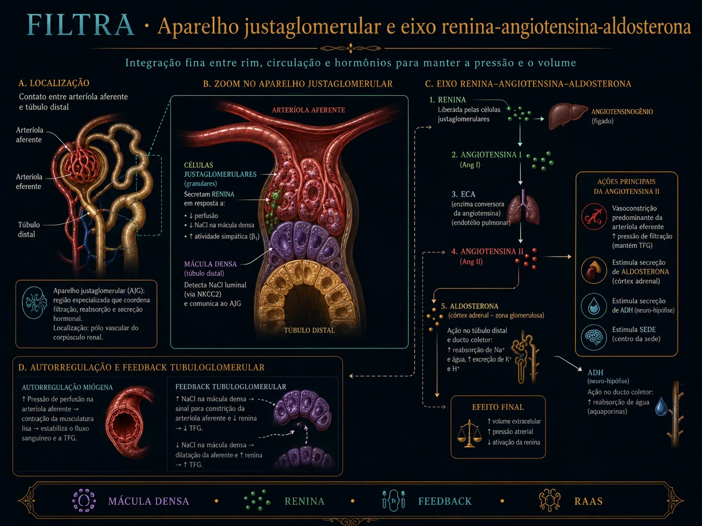
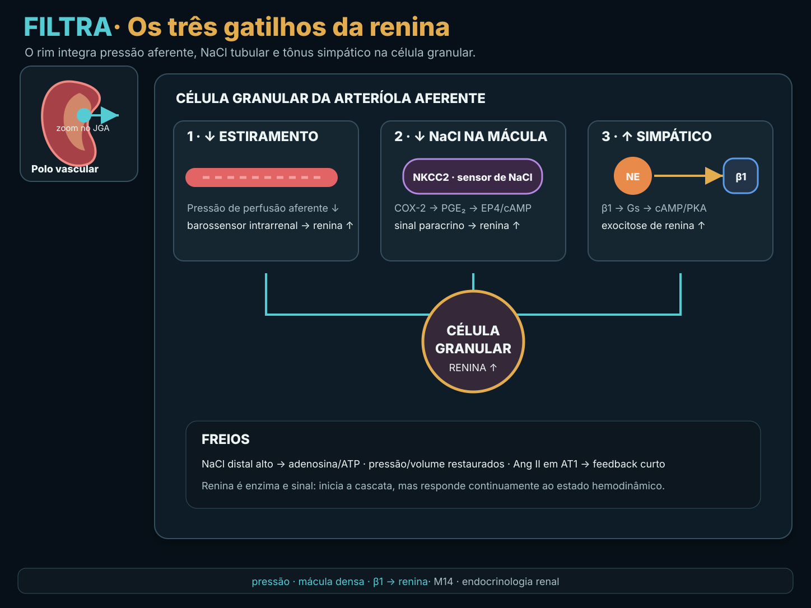
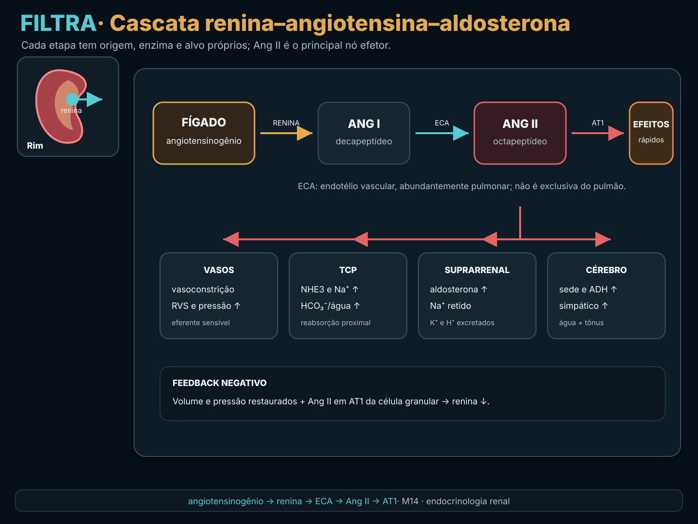
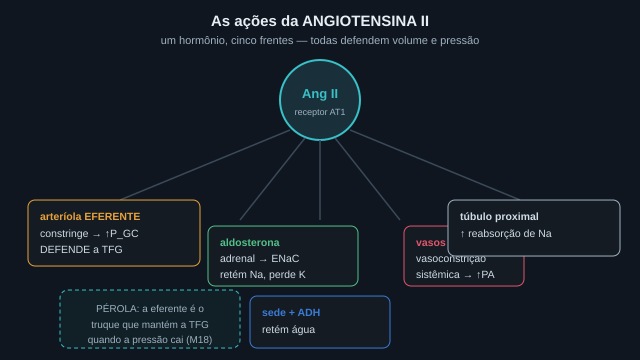
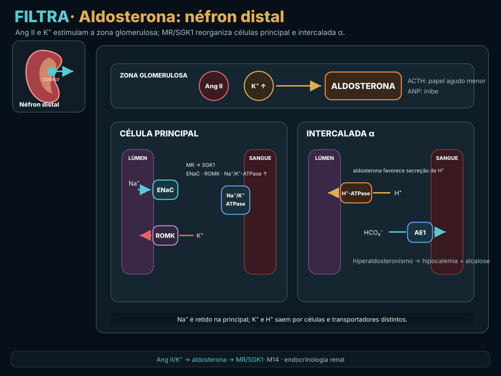
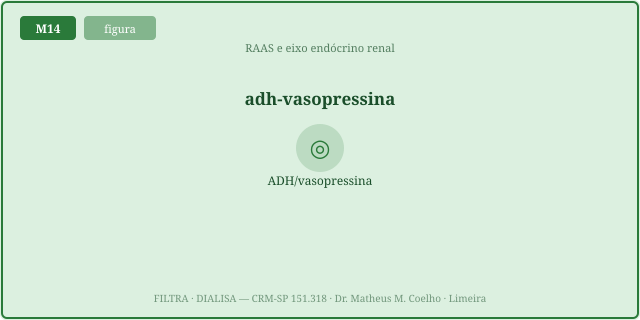
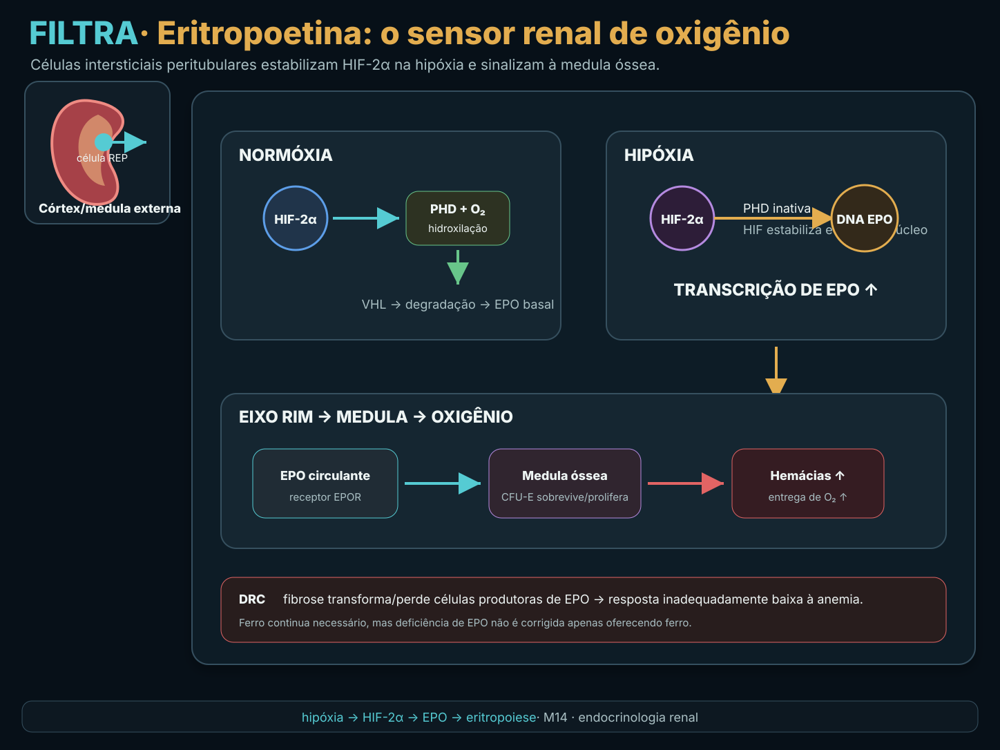
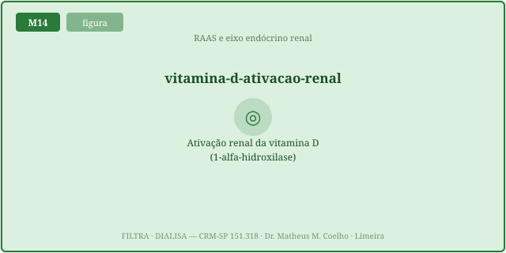

Conceito — o rim que sente e secreta


1. O aparelho justaglomerular e os TRÊS sinais da renina
No aparelho justaglomerular (JGA) moram as células granulares (que estocam renina) e a mácula densa (que prova o Na⁺ do túbulo). A renina é o gatilho do eixo e é liberada por três sinais: (1) ↓pressão na arteríola aferente — um barorreceptor; (2) ↓Na⁺ chegando à mácula densa — o feedback tubuloglomerular; (3) ↑tônus simpático (receptor β1). O volume circulante efetivo é o sinal que o eixo defende: quando o volume sobe, a renina é freada (feedback). É a definição operacional do rim como glândula (Fig. 1, Fig. 2).


2. A cascata: angiotensinogênio → Ang I → Ang II
A renina cliva o angiotensinogênio (substrato hepático) em angiotensina I. No
pulmão, a ECA converte Ang I em angiotensina II — o efetor. Como AngII = renina ·
angiotensinogênio, o substrato importa: dobrar o angiotensinogênio dobra a Ang II para a mesma
renina (Fig. 3).

3. A Ang II na eferente + a aldosterona no ducto coletor
A Ang II faz muito: constringe preferencialmente a arteríola eferente (sobe a pressão glomerular e preserva a TFG quando a perfusão cai — ponte M2), estimula a sede e o ADH, aumenta a reabsorção proximal de Na⁺ e dispara a aldosterona na suprarrenal. A aldosterona ativa o ENaC na célula principal do ducto coletor: retém Na⁺ e secreta K⁺/H⁺ — por isso o hiperaldosteronismo cursa com hipocalemia e alcalose (ponte M8) (Fig. 4, Fig. 5).


4. O ADH / vasopressina — osmótico × não-osmótico
O ADH (vasopressina) abre aquaporinas no ducto coletor e retém água livre (ponte M10). Tem dois estímulos: o osmótico (tonicidade↑ → ADH↑, sensível a poucos mOsm/kg) e o não-osmótico (volume↓↓ → ADH↑, um override hemodinâmico). Quando o volume despenca, o corpo aceita ficar hiponatrêmico para preservar volume — o ADH dispara mesmo com tonicidade baixa (Fig. 6).

5. EPO e vitamina D — o rim além do RAAS
A eritropoetina nasce de fibroblastos peritubulares que sentem O₂ (via HIF): O₂↓ → EPO↑ → mais hemácias. Na DRC, a massa renal cai e a fábrica de EPO morre → a EPO despenca apesar da anemia → anemia da DRC. A vitamina D só vira calcitriol ativo pela 1α-hidroxilase renal (ponte M12); na DRC ela também cai. O rim, então, é glândula tripla: hemodinâmica (RAAS/ADH), hematológica (EPO) e mineral (vit D). As Fig. 1–8 reaparecem no Caso, na Trilha e na Avaliação.


Caso — cinco atos, decida antes de revelar
Cinco encontros com o rim-glândula. (A) Jovem com hemorragia, PA 80/50, taquicárdico. (B) Homem 45a, HAS resistente, sopro abdominal. (C) Mulher 38a, HAS + hipocalemia, sem edema. (D) Paciente com DRC G4, Hb 8,5, ferro normal. (E) Idoso com pneumonia, Na⁺ 122, euvolêmico.
pressure 65, volume 65, naMacula 70, symp 1.8 →
regime hipovolemia. O eixo está fazendo seu trabalho.pressure 68,
naMacula 72 → renina e AngII elevadas. É HAS dependente de RAAS — daí IECA/BRA funcionarem (e
cuidado: na estenose bilateral eles podem derrubar a TFG, pois a eferente é que segura o glomérulo).aldoAuto 8, kplus 3.0 → aldo ↑, renina ↓, regime hiperaldo_primario. Contraste com
o Ato 1: lá a aldo é alta mas a renina também (ARR normal).GFR 18, o2 80 → EPO abaixo
do basal apesar da hipóxia. É a falência da glândula. Trata-se com EPO exógena (após repor
ferro). O mesmo rim destruído também não ativa a vitamina D (Fig. 8) → hipocalcemia, PTH↑.tonicity 268, volume 100, adhDrive 5 → ADH alto, regime siadh. Contraste: na
hemorragia (Ato 1) o ADH também sobe — mas ali é apropriado (volume↓↓, override não-osmótico).
Lição: o rim é uma glândula que sente pressão, Na⁺ e O₂ e responde com renina/AngII/ aldo, ADH, EPO e vit D. Decompor o sinal antes de interpretar o hormônio.
Trilha socrática — dez passos que constroem o eixo
1. Onde mora o sensor que dispara a renina?
Pista: dois tipos de célula no mesmo ponto.
No aparelho justaglomerular: as células granulares da arteríola aferente (estocam renina) e a
mácula densa do túbulo distal (prova o Na⁺). Sensor e glândula juntos (Fig. 1).
2. Quais são os TRÊS sinais que liberam renina?
Pista: pressão, sal, nervo.
① ↓pressão na aferente (barorreceptor); ② ↓Na⁺ na mácula densa (feedback tubuloglomerular);
③ ↑tônus simpático (β1). Qualquer um sobe a renina; o volume↑ a freia (Fig. 2).
3. Por que AngII = renina · angiotensinogênio?
Pista: enzima × substrato.
A renina é a enzima limitante; o angiotensinogênio é o substrato. O produto da cascata
escala com os dois — por isso o substrato hepático também importa (Fig. 3).
4. Como a Ang II preserva a TFG na hipoperfusão? (ponte M2)
Pista: a arteríola de saída.
Ang II constringe preferencialmente a eferente → sobe a pressão dentro do glomérulo → mantém a
TFG mesmo com perfusão baixa. Por isso IECA/BRA podem baixar a TFG na estenose bilateral (Fig. 4).
5. O que a aldosterona faz no ducto coletor? (ponte M8)
Pista: troca iônica.
Ativa o ENaC na célula principal: retém Na⁺ e secreta K⁺/H⁺. Daí o hiperaldo dar
hipocalemia e alcalose. Estimulada por Ang II e pela hipercalemia direta (Fig. 5).
6. No hiperaldosteronismo primário, a renina está alta ou baixa?
Pista: o feedback do volume.
Baixa. A aldosterona autônoma retém volume → o volume alto suprime a renina. Aldo alta + renina
baixa → ARR alto é a assinatura. No RAAS secundário (hipovolemia) ambas sobem juntas.
7. Quais os dois estímulos do ADH e qual domina na crise?
Pista: osmolalidade × volume.
O osmótico (tonicidade) é fino; o não-osmótico (volume↓↓) é um override: na
hipovolemia grave o ADH dispara mesmo com tonicidade baixa — o corpo prioriza volume (Fig. 6).
8. O que define o SIADH?
Pista: ADH sem motivo.
ADH alto sem estímulo osmótico (tonicidade baixa) nem de volume (euvolemia). Retém água livre →
hiponatremia euvolêmica. Diferente da hipovolemia, onde o ADH alto é apropriado (Fig. 6).
9. Por que a anemia da DRC ocorre apesar da hipóxia?
Pista: a fábrica morreu.
Os fibroblastos peritubulares que produzem EPO são destruídos na DRC → mesmo com hipóxia, a EPO
não sobe → anemia. Trata-se com EPO exógena, não só ferro (Fig. 7).
10. Onde a vitamina D vira ativa, e o que falha na DRC? (ponte M12)
Pista: a hidroxilação final.
A 1α-hidroxilase renal converte 25-OH-D em calcitriol. Na DRC essa enzima falha →
hipocalcemia → hiperparatireoidismo secundário. O rim é também glândula do eixo ósseo-mineral (Fig. 8).
Instrumento — a cascata RAAS × o volume (a alça de feedback)
As três curvas — renina, Ang II e aldosterona — caem da esquerda (volume baixo) para a direita (volume alto). É a alça de feedback: volume↑ → renina↓. O ponto branco é o seu volume atual. Mexa nos outros sinais (pressão, Na da mácula, simpático) e veja a cascata inteira subir ou descer.
A resposta de cada hormônio ao estímulo (computado)
Laboratório — mova os sinais, leia o eixo endócrino por mecanismo
| Hormônio / sinal | Atual (rel.) | Basal ≈ |
|---|---|---|
| Renina (gatilho do eixo) | — | ~1.7 |
| Angiotensina II (efetor) | — | ~1.7 |
| Aldosterona (retém Na, secreta K/H) | — | ~1.7 |
| ↳ razão aldo/renina (ARR) | — | ~1 |
| ADH / vasopressina (água livre) | — | ~1.6 |
| ↳ componente não-osmótico (volume) | — | 0 |
| Eritropoetina (hemácias) | — | ~1.0 |
| Calcitriol — vit D ativa (cálcio) | — | ~1.0 |
| Regime do eixo | — | basal |